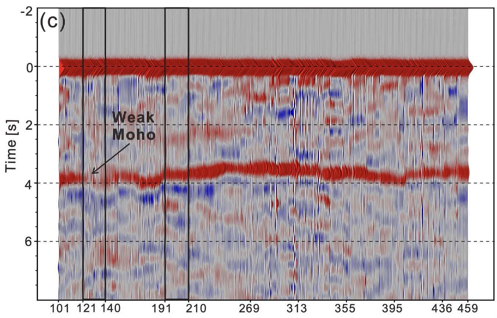

PARSIMONS: Passive And Reliable Seismic Imaging and Monitoring Of the Near Surface
近地表结构被动源地震成像及监测
特色: 被动源、经济、可靠、环保

近地表（<10公里）是地球大气圈、水圈、生物圈及固体地球相互作用及物质交换的主要场所，建立其结构模型对油气及矿产资源探索、地震机制、地震灾害等研究至关重要。
本研究组致力于利用南海及周缘的固定及流动地震仪连续记录的地面震动数据，发展新的近地表成像及监测方法，获得高精度的地下结构及其变化，进而研究构造演化、成矿机制、地震源区结构及发震构造等。

南岭成矿带线状台阵接收函数
最新研究
研究组利用密集台阵接收函数成像方法获得南岭成矿带高精度莫霍面及壳内间断面结构模型。结果显示该区域郴州-临武断裂周围莫霍面转换波振幅较小，对应着莫霍面转换厚度较大，可能与地幔物质侵入促进钨锡矿成矿有关。相关结果发表在 Geophysical Research Letters 上。